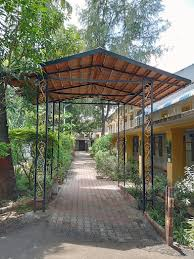
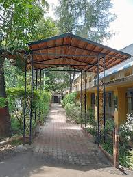
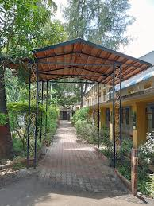

Department Images
 

Civil Engineering Department |
The Department of Civil Engineering (CE) offers four-year undergraduate courses, training the students in multiple core disciplines including Structural Analysis and Design, Traffic Engineering, Hydraulics, Construction Management, Environment Engineering, and Surveying, as well as exposure to interdisciplinary projects to enhance collaborative efforts and hone entrepreneurship skills. The department aligns its vision of being the collaborative innovation ambassador in Civil Engineering with the Institute’s mission objectives of passion for attempting to solve problems innovatively with a culture of mutual respect and creativity. Our mission is to offer world-class undergraduate and graduate education, research outcomes, industrial consultancy, and training in Civil Engineering.
